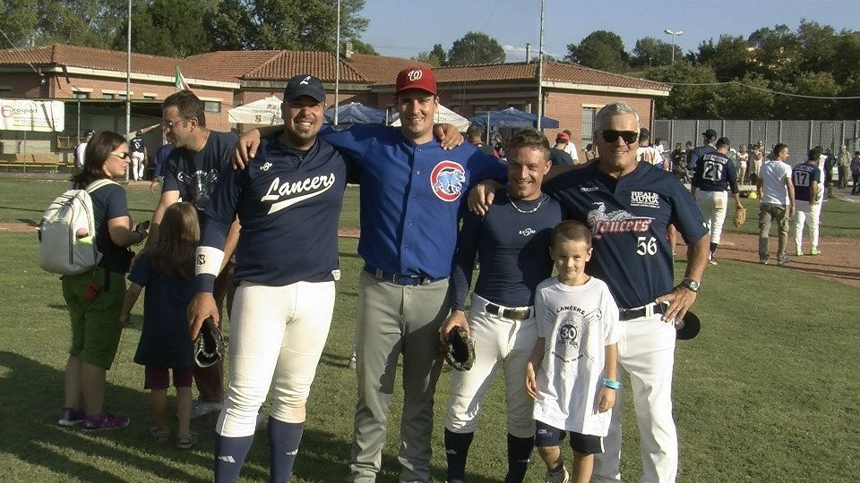

Un grazie sincero a tutti gli intervenuti che nei 2 giorni di festeggiamenti hanno risposto presente, giocatori, allenatori, dirigenti di passato e presente, tutti insieme per ricordare una pagina importante della nostra vita, un luogo dove tante amicizie sono nate e dove i ricordi sono sempre vivi nelle menti di tutti.
La speranza è che questo traguardo possa in qualche modo considerarsi un punto di partenza e non di arrivo, per questo voglio subito ringraziare dirigenti, sponsor e giocatori che in questo periodo di “crisi”, fanno parte della nostra grande e allegra famiglia, loro sono la nostra speranza per andare avanti.
La prima novità riguarda il campo da gioco, dopo anni di “chiacchiere”, il nostro campo ha finalmente un impianto di irrigazione interrato e efficiente.
Chi ha avuto modo di assistere alla partita in occasione della festa ha già potuto constatare le buone condizioni in cui desta il nostro campo, credo che questa opera può solo migliorare le cose, per la gioia nostra e spero delle generazioni future.
Un grazie quindi a Luciano Nocentini anima del progetto (manutentore dell’impianto) e a tutte quelle persone che questo inverno si sono ritrovate per portarlo a termine, incominciando dal presidente Moretti, passando per il dirigente accompagnatore Pasquale, per finire ricordando Nannucci, Meucci e Degl’innocenti.
Veniamo al baseball giocato, come di consueto siamo iscritti al campionato di serie C, in attesa di capire se a livello giovanile, tra mille difficoltà sia possibile intraprendere altre iniziative, indispensabili per il nostro futuro.
In ambito senior il pitcher Daniele Ciappi è la prima novità della stagione, sono sicuro che con il suo passato in categorie superiori, saprà dare buoni consigli ai nostri giovani lanciatori ma siamo sicuri anche che possa essere una valida alternativa sul monte di lancio.
Le novità non finiscono qui, il nostro amato allenatore cubano e amico Cordero è tornato ad allenarci dopo un paio di stagioni di pausa, Gilbi quindi darà una grossa mano a i due attuali tecnici, Gentilini e Zalonici, che in questi anni hanno svolto un lavoro ottimo.
Infine concludiamo le novità con il ritorno di due grandi amici, Nardi Simone e Gianluca Glielmi, riaverli in squadra è per molti un bellissimo tuffo nel passato ma anche un grande aiuto in campo per i più giovani, che rimangano sempre la maggioranza del gruppo.
Un grazie per nulla retorico ad Antonio Parrini per il suo contributo nelle nostre pagine multimediali, Sacha Pasquale e Luciano Nocentini inossidabili dirigenti accompagnatori.
Buon campionato a tutti.
Dal lanciere Gabriele Nerbini